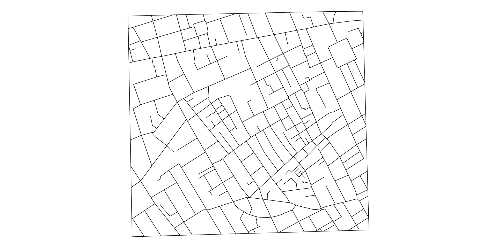
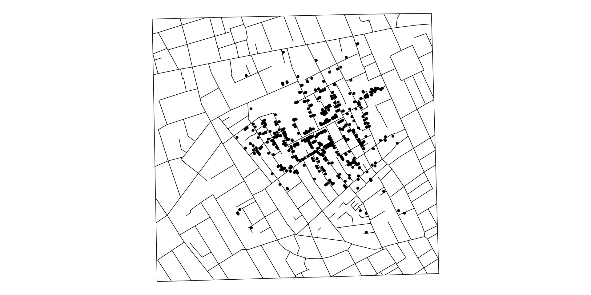
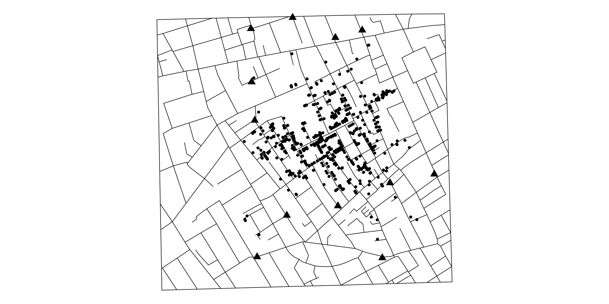

library(HistData)
library(ggplot2)ジョン・スノウのコレラマップを用いたR演習
この模擬授業では、データ分析演習の一部として、 実際のデータを使って社会問題を考える演習を紹介します。
扱う題材は、1854年ロンドンのコレラ流行です。
目標
この授業では、Rの操作を覚えるだけではなく、 データ分析の一連の流れを身につけることを重視します。
問い：
1854年、ロンドンのソーホー地区でコレラが流行しました。
死亡地点と井戸の位置から、感染源を推測できるでしょうか。
この問いを、Rを使って考えていきます。
今回は HistData パッケージに含まれるデータを使います。
主に使うデータは次の3つです。
Snow.deaths：コレラ死亡地点Snow.pumps：井戸の位置Snow.streets：道路の情報分析を始める前に、まずデータの中身を確認します。
case x y
1 1 13.588010 11.095600
2 2 9.878124 12.559180
3 3 14.653980 10.180440
4 4 15.220570 9.993003
5 5 13.162650 12.963190
6 6 13.806170 8.889046学生には、次の点を確認してもらいます。
x と y は何を表しているか pump label x y
1 1 Oxford Market 8.651201 17.89160
2 2 Castle St E 10.984780 18.51785
3 3 Oxford St #1 13.378190 17.39454
4 4 Oxford St #2 14.879830 17.80992
5 5 Gt Marlborough 8.694768 14.90547
6 6 Crown Chapel 8.864416 12.75354ここでは、死亡地点と井戸の位置が座標データとして与えられていることを確認します。
まず、道路だけを描いてみます。

次に、コレラによる死亡地点を追加します。

問い：
死亡地点はランダムに分布しているでしょうか。
最後に、井戸の位置を追加します。

この地図を見ると、死亡地点が特定の井戸の周辺に集中しているように見えます。
ここで学生には、次のように問いかけます。
どの井戸が感染源として疑われるでしょうか。
その理由は何でしょうか。
可視化によって、死亡地点と井戸の位置に関係がありそうだと分かりました。
次に考えるべきことは、
この関係を、数値としてどのように確認できるか
です。
ただし、ここで重要な注意点があります。
Snow.deaths には、死亡した人の地点だけが含まれています。
つまり、次の情報は含まれていません。
したがって、このデータだけで
井戸に近いほど死亡しやすい
と厳密に分析することはできません。
仮に地点ごとに死亡者数や人口が分かれば、次のような分析が考えられます。
[ 死亡者数_i = + Broad Street Pumpからの距離_i + u_i ]
ここで、() が負であれば、
Broad Street pumpに近い地点ほど死亡者数が多い
という関係を示唆します。
仮に、Broad Street pumpからの距離と死亡者数に強い関係が見つかったとします。
しかし、そこから直ちに
Broad Street pumpの水がコレラを引き起こした
と結論づけてよいでしょうか。
注意すべき点があります。
ここから、
回帰分析ができることと、因果関係を明らかにすることは同じではない
という点を確認します。
Snow.deaths の観測数を確認しなさい。この演習では、Rで地図を作るだけではありません。
こうした流れを通じて、統計学を社会問題の理解に使う力を身につけます。
この授業では、今後も同じ流れで演習を行います。
後半では、この流れを回帰分析や因果推論の考え方へとつなげていきます。
ジョン・スノウのコレラマップは、 データ分析の基本的な流れを学ぶための優れた題材です。
データを見る
可視化する
仮説を立てる
分析する
限界を考える
この型を、授業全体を通じて繰り返し練習していきます。